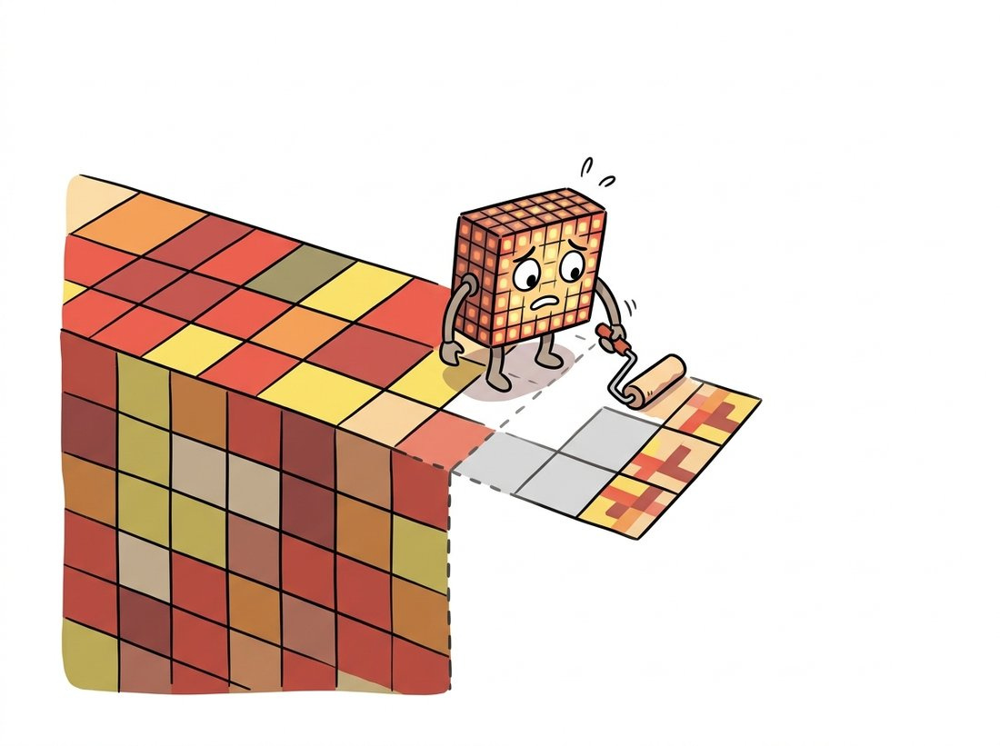

"Everything was going wonderfully until I reached the edge of the image, at which point I was asked to summarize pixels that do not exist. I have been improvising ever since, and some of my best work is out there."
A Convolution Kernel With Boundary Issues
This section answers the two questions every filtering pipeline must settle before it ships: what happens where the kernel hangs off the image, and how the arithmetic gets done fast enough to matter. Border handling looks like trivia until a padding choice paints dark vignettes on your output or leaks one side of a panorama into the other. Performance looks like the library's problem until you learn that one algebraic fact, separability, routinely makes filters ten times faster, and that the convolution-as-matrix-multiply trick (im2col) is how GPUs run the CNNs of Chapter 19. These are the engineering load-bearing walls under everything this chapter built.
The previous sections treated filtering mathematically, on images that conveniently extended forever in all directions. Real images stop. And real systems have frame budgets. This closing section pays the chapter's two deferred debts, and in settling them connects hand-designed filtering to how deep learning frameworks implement the very same operation at scale.
1. The Border Problem Beginner
Center a $k \times k$ kernel on a pixel in the top row and $\lfloor k/2 \rfloor$ of its rows dangle above the image, referencing pixels that do not exist. Exactly two honest responses exist. The first: refuse to compute those outputs, producing a result smaller than the input by $k - 1$ in each dimension ("valid" convolution; this is why un-padded CNN feature maps shrink layer by layer). The second: invent the missing pixels by padding, and the inventing policy matters far more than beginners expect. Figure 3.6.1 shows the five standard policies extending the same row. The illustration below dramatizes the predicament: at the border the kernel literally runs out of real pixels to stand on and has to make some up.

Each policy fails somewhere specific. Constant (zero) padding surrounds the image with blackness, so any smoothing filter darkens the frame's rim, a vignette artifact visible in careless thumbnail pipelines, and any derivative filter from Section 3.4 hallucinates a strong edge along the entire border. Replicate is safe and bland; it slightly overweights edge pixels. Reflect and reflect_101 continue local statistics most gracefully, which is why reflect_101 is OpenCV's default (cv2.BORDER_REFLECT_101, alias BORDER_DEFAULT); the difference between them, whether the edge pixel itself is duplicated, matters mainly for derivative filters, where the doubled pixel of plain reflect creates a spurious zero-gradient line. Wrap is correct exactly when the data is periodic, which sounds exotic until Chapter 4: fast Fourier transform (FFT) based convolution wraps implicitly, whether you wanted it to or not, and that quietly mandatory wrap is one of that chapter's central gotchas.
The NumPy and OpenCV vocabularies for identical policies differ, and one mismatch is a recurring source of off-by-the-border bugs: NumPy's mode="reflect" equals OpenCV's BORDER_REFLECT_101, while NumPy's mode="symmetric" equals OpenCV's BORDER_REFLECT. The demonstration below makes the policies tangible on a tiny array, and is worth running once just to fix Figure 3.6.1 in memory.
# Make the five border policies tangible on one short row, then flag the
# naming trap: NumPy's "reflect" is OpenCV's BORDER_REFLECT_101, while
# NumPy's "symmetric" is OpenCV's BORDER_REFLECT (edge pixel doubled).
import numpy as np
row = np.array([10, 20, 30, 40, 50, 60])
print(np.pad(row, 3, mode="constant")) # [ 0 0 0 10 20 30 40 50 60 0 0 0]
print(np.pad(row, 3, mode="edge")) # [10 10 10 10 20 30 40 50 60 60 60 60]
print(np.pad(row, 3, mode="symmetric")) # [30 20 10 10 20 30 40 50 60 60 50 40]
print(np.pad(row, 3, mode="reflect")) # [40 30 20 10 20 30 40 50 60 50 40 30]
print(np.pad(row, 3, mode="wrap")) # [40 50 60 10 20 30 40 50 60 10 20 30]
# Naming trap: np "reflect" == cv2.BORDER_REFLECT_101 (edge pixel NOT doubled)
# np "symmetric" == cv2.BORDER_REFLECT (edge pixel doubled)np.pad policies on one row of numbers, with exact printed outputs, plus the NumPy-to-OpenCV naming correspondence (reflect equals BORDER_REFLECT_101, symmetric equals BORDER_REFLECT) that regularly trips up engineers porting code between the two libraries.2. Separability: The Free Order of Magnitude Intermediate
A 2D kernel $K$ is separable if it factors into an outer product of a column and a row, $K = v\,h^\top$. When it does, the associativity of convolution from Section 3.1 lets the single 2D pass split into two 1D passes (filter rows with $h$, then columns with $v$), and the per-pixel cost falls from $k^2$ multiplications to $2k$:
$$ K * I = (v\,h^\top) * I = v * (h^\top * I) \qquad \Rightarrow \qquad \frac{k^2}{2k} = \frac{k}{2}\times \text{ speedup} $$
For a $15 \times 15$ Gaussian that ratio is 7.5x; for the $31 \times 31$ kernels of the large-kernel renaissance it is 15.5x. The chapter's roster of separable kernels is no accident: the Gaussian of Section 3.2 (the only rotationally symmetric separable filter), the box, and the Sobel of Section 3.4, whose $[1\;2\;1]^\top [-1\;0\;1]$ factorization we met explicitly. The Laplacian and the LoG are not separable, one reason the DoG approximation (a difference of two separable Gaussians) wins in practice.
Linear algebra hands us both a test and a recipe. The outer product $v h^\top$ has rank 1, so a kernel is separable exactly when its matrix rank is 1, and the singular value decomposition (SVD) both checks this and produces the factors. The SVD writes any matrix as $A = U \Sigma V^\top$ with $\Sigma$ holding the nonnegative singular values in decreasing order; the count of nonzero singular values is the rank, so a single nonzero value signals a separable kernel, and the first columns of $U$ and $V$ are its factors (the Mathematical Foundations appendix develops the SVD in full):
# Test separability with the SVD: a kernel splits into a column-times-row
# outer product exactly when its matrix rank is 1. The first singular
# vectors give the factors; Sobel passes, the Laplacian is rejected.
import numpy as np
def separate_kernel(K, tol=1e-6):
"""If K is rank-1 (separable), return (v, h) with K = outer(v, h)."""
U, S, Vt = np.linalg.svd(K)
if S[1] / S[0] > tol:
return None # rank > 1: not separable
v = U[:, 0] * np.sqrt(S[0]) # column factor
h = Vt[0, :] * np.sqrt(S[0]) # row factor
return v, h
sobel_x = np.array([[-1., 0., 1.],
[-2., 0., 2.],
[-1., 0., 1.]])
v, h = separate_kernel(sobel_x)
print(np.round(v, 3), np.round(h, 3))
# [-0.76 -1.521 -0.76 ] [ 1.316 -0. -1.316]
# (= [1,2,1] x [-1,0,1] up to sign and scale; only the product is unique)
print(np.allclose(np.outer(v, h), sobel_x)) # True
laplacian = np.array([[0., 1., 0.], [1., -4., 1.], [0., 1., 0.]])
print(separate_kernel(laplacian)) # None: rank 2, not separablenp.allclose returns True), while the Laplacian is correctly rejected as inseparable (returns None).
The payoff is measurable in three lines of timing. OpenCV exposes the two-pass path as cv2.sepFilter2D, and cv2.GaussianBlur uses it internally, which is why the library shortcut in Section 3.2 advertised separability as something you get without asking.
# Measure the separability payoff: time a full 31x31 Gaussian against the
# two-pass separable form on a 1080p frame. The clock helper averages many
# repetitions so the per-call milliseconds are stable enough to compare.
import cv2, numpy as np, time
img = np.random.rand(1080, 1920).astype(np.float32) # one 1080p frame
g = cv2.getGaussianKernel(31, 5.0) # 31-tap 1D Gaussian
G2 = g @ g.T # full 31x31 2D kernel
def clock(fn, reps=20):
t0 = time.perf_counter()
for _ in range(reps): fn()
return (time.perf_counter() - t0) / reps * 1000 # ms per call
t_full = clock(lambda: cv2.filter2D(img, -1, G2))
t_sep = clock(lambda: cv2.sepFilter2D(img, -1, g, g))
print(f"full 2D: {t_full:.1f} ms separable: {t_sep:.1f} ms "
f"speedup: {t_full / t_sep:.1f}x")
# Representative output (4-core laptop):
# full 2D: 38.4 ms separable: 4.9 ms speedup: 7.8xcv2.sepFilter2D turns a frame-budget-breaking 38 ms into a comfortable 5 ms. The measured 7.8x sits below the theoretical 15.5x for two reasons explored later in this section: filter2D already switches to FFT convolution at this kernel size, and at these speeds memory traffic, not multiplication, sets the pace.The Gaussian's mathematical virtues from Section 3.2 (cascading, no artifacts, rotational symmetry) explain why theoreticians like it; separability explains why engineers deploy it. It is the unique filter that is simultaneously rotationally symmetric and computable as two cheap 1D passes. Whenever a pipeline needs "some smoothing" at scale, the Gaussian wins the bid on price, which is why it is the default pre-filter of Section 3.4's derivatives, the pyramid generator of Chapter 4, and the scale-space engine behind the detectors of Chapter 10.
3. Counting Operations: Direct, Separable, FFT Intermediate
Picking the wrong one of these three algorithms can make the same blur run a thousand times slower, so this is the table that quietly decides whether your filter fits a frame budget or blows past it. For an $N$-pixel image and a $k \times k$ kernel, the three families of convolution algorithm scale differently, and Table 3.6.1 puts numbers on a 1080p frame ($N \approx 2.07$ million pixels) to make the asymptotics concrete. Read it as a buy-or-build decision: at each kernel size, which algorithm should you reach for?
| Kernel size | Direct: $N k^2$ | Separable: $2 N k$ | FFT: $\approx N \log_2 N \times 3$ | Cheapest |
|---|---|---|---|---|
| $3 \times 3$ | 1.9 × 10⁷ | 1.2 × 10⁷ | 1.3 × 10⁸ | Separable (or direct) |
| $15 \times 15$ | 4.7 × 10⁸ | 6.2 × 10⁷ | 1.3 × 10⁸ | Separable |
| $31 \times 31$ (inseparable) | 2.0 × 10⁹ | n/a | 1.3 × 10⁸ | FFT |
| $101 \times 101$ (inseparable) | 2.1 × 10¹⁰ | n/a | 1.3 × 10⁸ | FFT, decisively |
Read the last column as a decision procedure. Small kernels: direct convolution, which modern SIMD hardware chews through with excellent cache behavior. Separable kernels of any size: two-pass, almost always optimal. Large inseparable kernels: transform to the frequency domain, multiply, transform back, at a cost that is independent of kernel size. The mathematics licensing that third route is the convolution theorem, the headline result of Chapter 4; OpenCV's filter2D already switches to it silently for kernels above roughly $11 \times 11$, so you have likely used FFT convolution without knowing. (Mind the implicit wrap-around border noted in Figure 3.6.1's discussion.)
4. How Production Systems Actually Do It Advanced
Between the textbook loop and the datasheet speed sits a stack of engineering that is worth knowing even when you never write it, because its vocabulary surfaces in profiler output and framework documentation. Four layers do most of the work.
Vectorization and threading. Libraries process 8 to 32 pixels per CPU instruction (SIMD) and split rows across cores: the baseline 100x over interpreted Python that Chapter 0's vectorization discussion promised. Integral images give the box filter (and through it, the guided filter of Section 3.5) a constant cost per pixel at any radius: precompute running sums once, then any rectangle's sum is four lookups. im2col plus GEMM (image-to-column unrolling followed by a general matrix multiply): unroll every kernel-sized window into the row of a giant matrix, so convolution becomes one dense matrix multiply, the single most optimized routine in computing. This memory-hungry but blazingly regular formulation is how cuDNN and PyTorch execute the conv layers of Chapter 19 on GPUs, alongside Winograd variants that trade additions for multiplications on $3 \times 3$ kernels. Downsample-filter-upsample: when a huge blur is the goal (backgrounds, bokeh), blur a quarter-resolution copy with a quarter-sized sigma and upsample; the error is invisible and the saving is 16x before any other trick, which is how phone "portrait mode" affords its giant background blurs.
Who: A backend video team at a video-conferencing company, building server-side background blur for clients too old to run it locally.
Situation: Product spec: 720p at 30 fps per stream, hundreds of concurrent streams per GPU node, with a person-segmentation model (a preview of Chapter 24) already consuming most of the budget. The blur itself was allotted 2 ms per frame.
Problem: The first implementation called a $51 \times 51$ Gaussian on the full frame: 21 ms on CPU, and even GPU-side it crowded the segmentation model's kernel queue. The team assumed they needed fancier hardware.
Decision: Three changes from this section, no new hardware: blur a 4x-downsampled frame with the correspondingly smaller $13 \times 13$ separable Gaussian, upsample, and composite through the (guided-filter-feathered) person mask. Cost: separability cut the kernel work 6x, downsampling cut pixel count 16x.
Result: 0.8 ms per frame, two orders of magnitude under the original, visually indistinguishable from the full-resolution blur in side-by-side review (a blurred background has no detail to lose). The hardware request was withdrawn.
Lesson: For large-radius smoothing, resolution is the cheapest knob: separability saves $k/2$, but downsampling saves $s^2$ and compounds with it. Spend algorithmic tricks before spending silicon.
Everything in this section, padding, separability, im2col, FFT switchover, Winograd, is an automatic decision inside modern frameworks. In PyTorch, torch.nn.functional.conv2d(x, w, padding="same") plus torch.backends.cudnn.benchmark = True makes cuDNN time the candidate algorithms on your exact shapes and cache the winner; in OpenCV, filter2D picks direct versus DFT by kernel size on its own. The from-scratch separable pipeline this section taught (SVD test, two passes, border bookkeeping: about 30 lines) collapses to one call whose internal dispatcher embodies the whole of Table 3.6.1. Write the 30 lines once to understand them; then never again.
Zero padding, the border mode this section just warned you about, is nonetheless the near-universal choice inside CNNs, and it has an upside nobody designed: the network can feel the zeros. Because the padding pattern differs at corners, edges, and interior, convolutional features pick up a weak position signal from their own borders, and published work has shown CNNs exploiting it to encode absolute position. A bug, a feature, and a research topic, all from the humblest setting in the API.
Table 3.6.1's arithmetic is the quiet protagonist of 2024-2026 architecture research. Large-kernel convnets such as UniRepLKNet (CVPR 2024, arXiv:2311.15599) lean on the depthwise trick (filter each channel independently) to keep $31 \times 31$ kernels affordable, while VMamba (2024, arXiv:2401.10166) sidesteps kernels entirely with selective state-space scans that cost $O(N)$ in sequence length, attacking the same long-range-context goal at box-filter prices. On the systems side, compiler stacks (torch.compile, Triton, TVM) now fuse convolutions with their surrounding pointwise operations automatically, eliminating the memory round-trips that dominate real latency, the modern descendant of this section's "do two 1D passes instead of one 2D pass" reasoning. The lesson generalizes: at every era of vision, the operations that win are the ones whose arithmetic the hardware of the day can afford, a thread continued in the deployment engineering of Chapter 28.
For each scenario, choose a border mode from Figure 3.6.1 and justify in one sentence: (a) Gaussian-smoothing photographs before thumbnailing; (b) Sobel gradients feeding the document-deskew estimator of Section 3.4; (c) filtering a 360-degree equirectangular panorama along its horizontal axis; (d) filtering tiles of a gigapixel pathology slide that will be stitched back together (careful: the honest answer for (d) involves overlapping tiles rather than any padding mode, and you should explain why).
Reproduce this section's timing experiment across kernel sizes $k \in \{3, 7, 15, 31, 63\}$ on a 1080p float32 image: time cv2.filter2D with the full $k \times k$ Gaussian against cv2.sepFilter2D with its 1D factors, 20 repetitions each. Plot both curves and the measured speedup against the theoretical $k/2$. Identify and explain any kernel size where filter2D suddenly gets faster than the trend (hint: this section mentioned OpenCV's silent DFT switchover).
A teammate reports that their batch thumbnailer darkens the outer 10 pixels of every image. Their pipeline: zero-pad, blur with $\sigma = 4$, downsample. Quantify the defect: for a constant white image of value 255, derive (or compute with np.pad and cv2.GaussianBlur) the output value at distances 0, 2, 5, and 10 pixels from the border under zero padding, then under reflect_101. Report the maximum brightness error of each mode and state the one-argument fix in OpenCV.